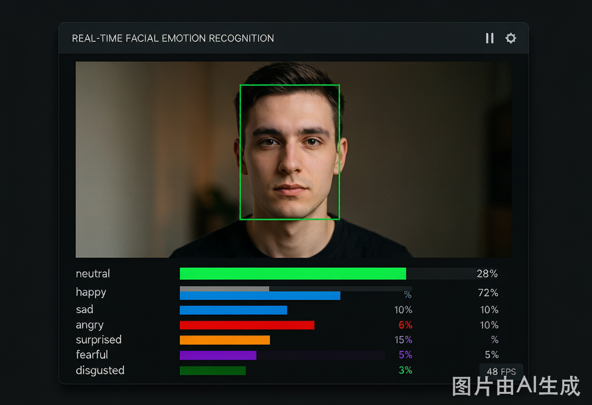
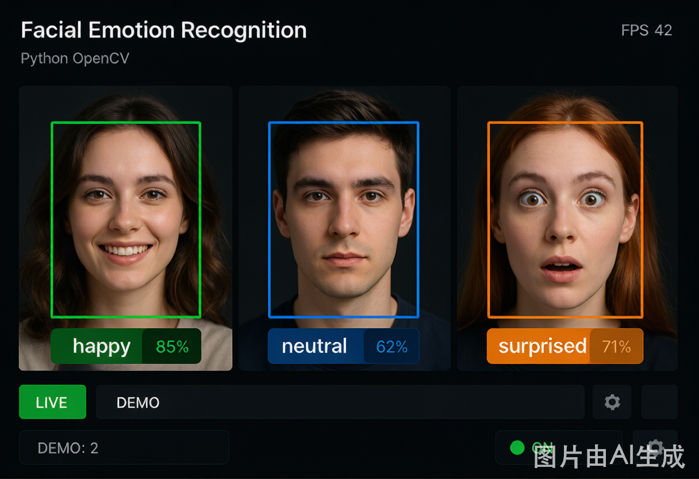
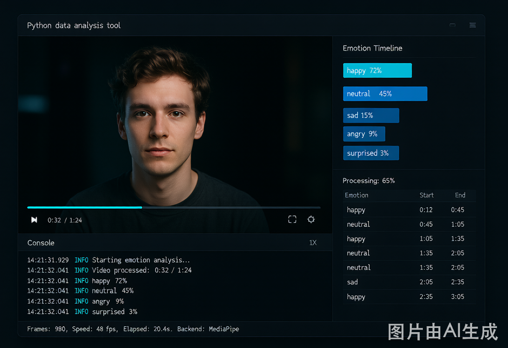

Face Emotion Analysis Toolkit
Real-time facial emotion recognition · Multi-backend · Interactive HTML reports · Dyadic synchrony analysis
Real-time facial emotion recognition · Multi-backend · Interactive HTML reports · Dyadic synchrony analysis
Interactive session report with pie chart, stacked area timeline, per-emotion bar chart & raw data table. Generated from a real 3-minute face recording.
HTML Report Plotly.jsDyadic synchrony analysis comparing two sessions with 6 statistical metrics: Pearson r, Mutual Information, Phase Locking, Granger Causality & more.
Synchrony Analysis Plotly.js
📷 Screenshot: single-face webcamGPU-accelerated detection (HSEmotion, EfficientNet-B0). Live emotion bars overlay, press Q to save CSV + auto-generate report.
Live Webcam GPU
👥 Screenshot: multi-face webcamInsightFace Buffalo-S backend. Detects 2-6+ faces simultaneously with unique face_id labels and color-coded bounding boxes.
Live Webcam Multi-personView the full project on GitHub: installation, usage docs, backend comparison, troubleshooting guide, and more.
GitHub MIT License
🎬 Screenshot: video analysisProcess MP4/AVI files with configurable frame-skipping, multi-backend support, and optional emotion label overlay on output video.
Video Batch